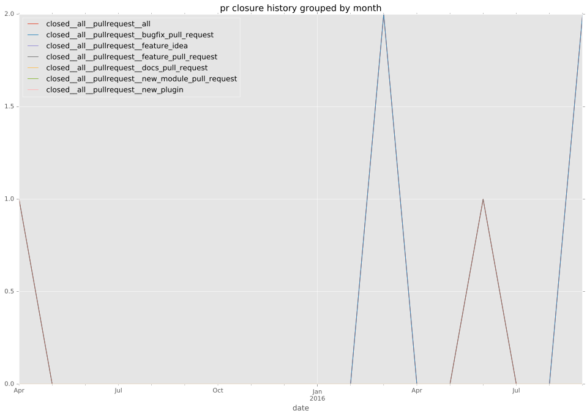

authors
maintainers
- sgargan
contributors
- sgargan : 62 commits
- mscherer : 15 commits
- irlevesque : 5 commits
- abadger : 2 commits
- bcoca : 1 commits
total issue counts
feature pull request: 1
pullrequest: 8
bugfix pull request: 6
feature idea: 1
issue: 3
new plugin: 1
bug report: 2
issue history
pullrequest history

days open by issue type
bugfix pull request
count: 9
std: 42.1251442464
min: 6
max: 139
median: 20.0
mean: 34.4444444444
all
count: 15
std: 45.7074548468
min: 6
max: 139
median: 37.0
mean: 53.2
pullrequest
count: 0
std: nan
min: nan
max: nan
median: nan
mean: nan
feature pull request
count: 2
std: 0.0
min: 37
max: 37
median: 37.0
mean: 37.0
feature idea
count: 1
std: nan
min: 94
max: 94
median: 94.0
mean: 94.0
issue
count: 0
std: nan
min: nan
max: nan
median: nan
mean: nan
new plugin
count: 2
std: 0.0
min: 93
max: 93
median: 93.0
mean: 93.0
bug report
count: 1
std: nan
min: 134
max: 134
median: 134.0
mean: 134.0
closures grouped by total days open